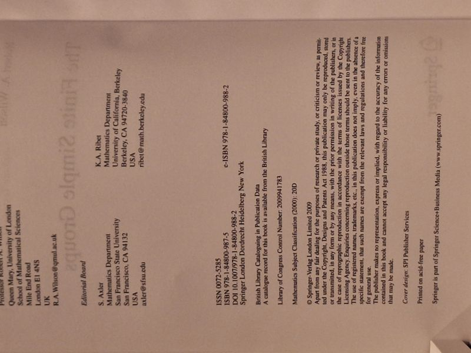

The Finite Simple Groups
Robert A. Wilson · Springer, London, 2009

C$55 · Very Good condition
'The Finite Simple Groups' by Robert A. Wilson (Queen Mary, University of London). Springer, Graduate Texts in Mathematics 251, 2009. A graduate-level survey of the finite simple groups and their classification - the alternating, classical, exceptional and sporadic groups. Yellow Springer hardcover (GTM laminated boards, issued without dust jacket). Bright, glossy boards; clean and unmarked. A Very Good copy.
Details
- Publisher: Springer, London, 2009
- Binding: Hardcover
- Edition: First edition (2009); Graduate Texts in Mathematics 251
- Condition: Very Good
- ISBN: 9781848009875
- Category: Mathematics